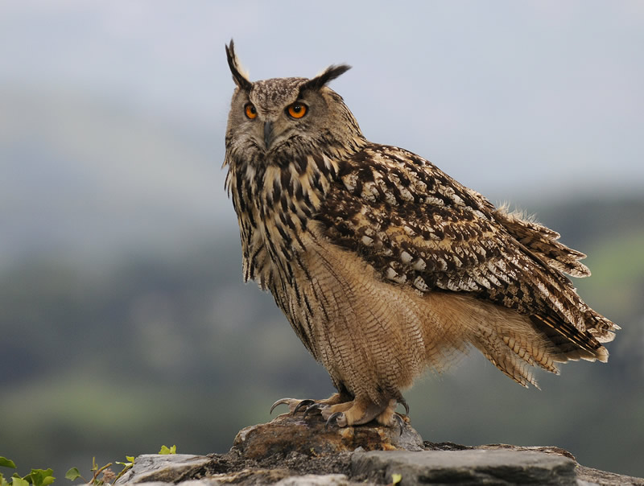

Animales Aereos Más Fuertes
Aquí conocerás algunos de los animales aereos más poderosos del planeta.
-
Águila Harpia:
El águila harpía es la rapaz más grande y poderosa de América. Con un peso que puede superar los 9 kg en las hembras y una envergadura de hasta 2,2 metros, esta ave es una verdadera reina de las selvas tropicales. Sus garras, que pueden medir más de 10 cm de largo, son más grandes que las de un oso pardo, lo que le permite capturar presas como monos, perezosos y coatíes con una precisión increíble. Este depredador se camufla entre el denso follaje de la selva, utilizando su plumaje gris y negro para pasar desapercibido. A diferencia de otras rapaces que cazan en campo abierto, la harpía acecha entre las ramas y ataca por sorpresa, utilizando su potente musculatura para levantar presas casi de su mismo peso. A pesar de su fortaleza, la harpía está en peligro debido a la deforestación y la caza furtiva. Su reproducción es lenta: solo pone un huevo cada dos o tres años, y ambos padres cuidan de la cría durante más de un año. Esta baja tasa de reproducción, sumada a la pérdida de su hábitat, ha reducido drásticamente sus poblaciones en los últimos años.


-
Búho Real:
El búho real es el rey de la noche en muchos ecosistemas de Europa y Asia. Con una envergadura de hasta 1,8 metros y un peso que puede llegar a los 4 kg, es una de las especies de búhos más grandes del mundo. Sus enormes ojos anaranjados le permiten ver en la oscuridad, mientras que sus plumas especiales reducen el sonido de su vuelo, lo que lo convierte en un cazador casi invisible. A diferencia de otras rapaces que cazan de día, el búho real espera hasta la noche para lanzarse sobre su presa. Se alimenta de una gran variedad de animales, desde roedores y conejos hasta otras aves e incluso zorros pequeños. Su técnica de caza es precisa: primero acecha desde un árbol o una roca y, cuando detecta el momento adecuado, se abalanza con un vuelo silencioso y letal. Los búhos reales son territoriales y pueden vivir hasta 60 años en cautiverio. Se comunican con su distintivo "uu-huu" grave, que puede escucharse a varios kilómetros de distancia en la tranquilidad de la noche. Aunque han sabido adaptarse a distintos entornos, el uso de pesticidas y la destrucción de sus hábitats han afectado algunas de sus poblaciones en los últimos años.

-
Halcón Peregrino:
El halcón peregrino ostenta el récord de velocidad en el mundo animal. Cuando se lanza en picado para cazar, puede alcanzar hasta 389 km/h, lo que lo convierte en el depredador aéreo más veloz. Este halcón tiene alas largas y afiladas, diseñadas para la velocidad y la maniobrabilidad, y una vista excepcionalmente aguda, cinco veces mejor que la de los humanos. Se encuentra en casi todos los continentes, desde desiertos y montañas hasta ciudades, donde anida en rascacielos como si fueran acantilados. Su dieta está compuesta principalmente de aves, como palomas y gaviotas, a las que caza en pleno vuelo con una precisión asombrosa. Su técnica consiste en elevarse a gran altura y luego caer en picado con las alas plegadas hasta golpear a su presa con las garras, generalmente en la cabeza o el cuello, matándola al instante. En los años 50 y 60, el halcón peregrino estuvo al borde de la extinción debido al uso de pesticidas como el DDT, que debilitaban sus huevos y reducían su población. Afortunadamente, tras la prohibición de estos químicos y los esfuerzos de conservación, la especie logró recuperarse y hoy en día es común en muchas ciudades, donde ayuda a controlar las poblaciones de palomas y otras aves urbanas.